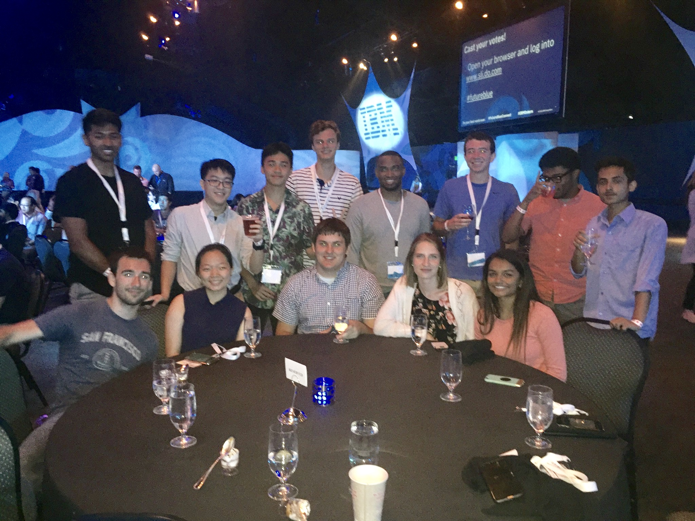

IBM
I spent the summer of 2019 interning at IBM. I worked on an internal web app and learned new technologies
such as Node.js, Vert.x (a Java framework), and a bit of Angular. I became accustomed to both working in an agile
environment and using a production pipeline. In my opinion, the greatest thing I took away from the internship was knowing
when (and when not to) ask questions and being able to learn new technologies quickly.

Aside from my technical experiences, I loved spending my with the other interns and learning from all my mentors.
Despite being a litte shy at times, I found no problem reaching out for help when I needed it, and I even formed close
relationships with my mentors and fellow interns. I genuinely enjoyed every day of the internship, and I am grateful to have had an experience that was both challenging
and fun.
In 2018, I was a web intern for a local podcast/radio show called 2Rogues. I was responsible for adding
new content, and creating/styling new pages that were to be added.